Summary
Moneybox is committed to helping people save and invest for their future. It made sense to introduce a mortgage service as Moneybox already supports customers in saving for their first home through a Lifetime ISA. When I joined the company in 2021, I saw the team forming and played a part in launching Moneybox Mortgage Advice. This in-app service aims to help users find the perfect mortgage for different housing requirements, be it buying a first home, a subsequent one, or remortgaging.
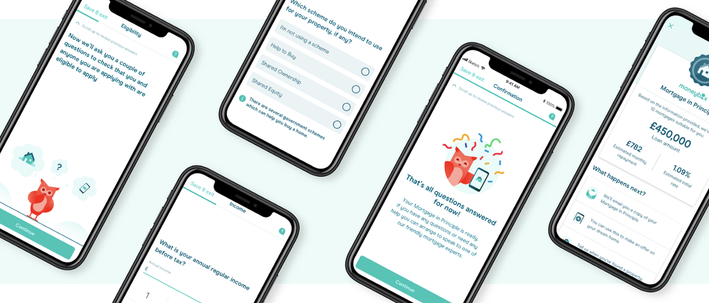
The beginning…
When the Moneybox home-buying team first began to tackle the world of mortgages, we knew we wanted our customers to be able to complete their mortgage application from start to finish all from within the app.
First up, the Mortgage In Principle (MIP), which is an official estimate from a mortgage lender confirming that, in principle, they would lend you a certain amount as a mortgage. We stripped this process down to the core questions that were legally required within a MIP, making the process a lot more digestible for the customer.
We chose to show one question per screen and organised them into five meaningful sections:
- Personal details
- Eligibility
- Income
- Outgoings
- Mortgage details
To help make the process even smoother for our customers, we pre-populated some of the answers with information already known to us, like personal details.
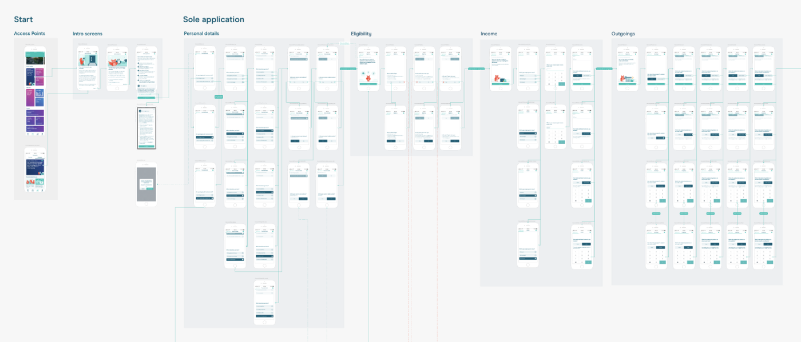
From a UI perspective, we made use of our input components in order to take advantage of elements we’ve previously designed and built. These were all part of our Design System.
The form itself made use of micro-interactions to elevate progress throughout the application. It visually scrolls down as soon as the customer completes their answer, and has the previously answered question appearing at the top. Tapping on that section of the screen will lead you back to the appropriate question.
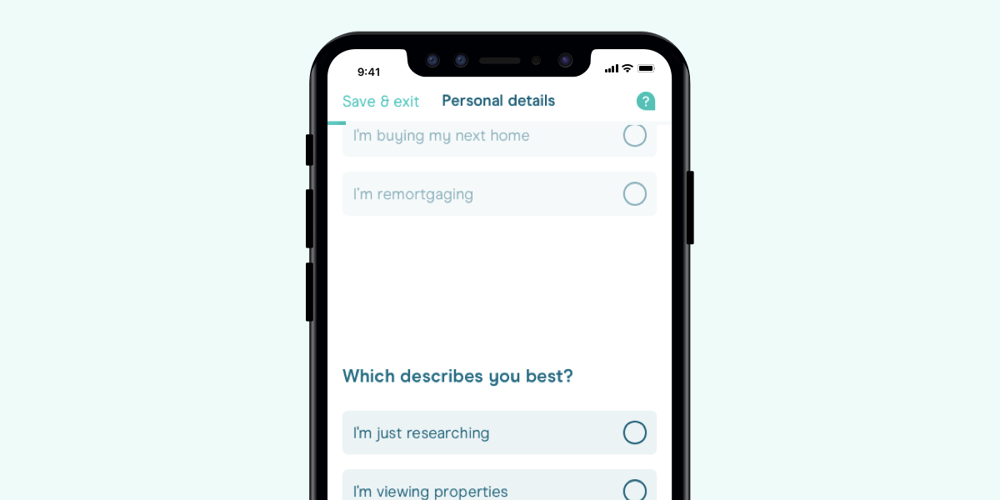
To further highlight progress, we also introduced a progress bar right below the navigation to showcase percentage of completion. We worked really closely with developers in order to achieve the right balance between a user friendly UI and a seamless technical implementation.
“Good user experience doesn’t translate into visuals only. As designers, we look at the entire process, and this also extends to screen copy.”
At Moneybox, our tone of voice is simple, engaging and easy to understand, so we always opt for a friendly language. We also worked with our team of mortgage advisers to ensure the right terminology was used throughout the flow.
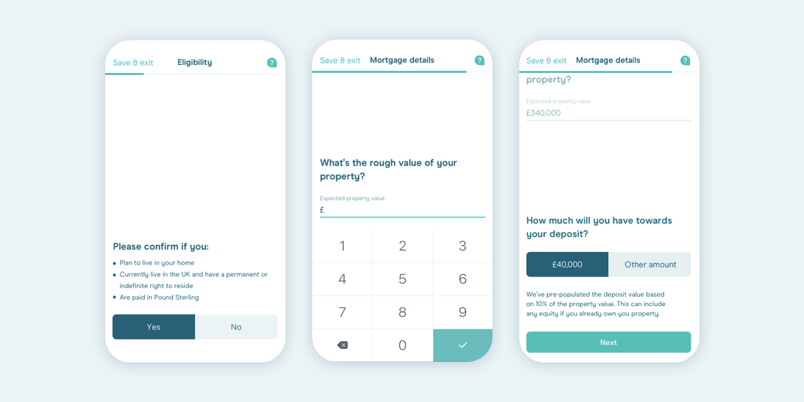
Finally, to make sure we were catering for our customer’s busy lives, we built a ‘save & exit’ functionality to allow for information to be completed at different points in time. This also helps if customer’s don’t have all of their information at hand at the time of starting a new MIP.
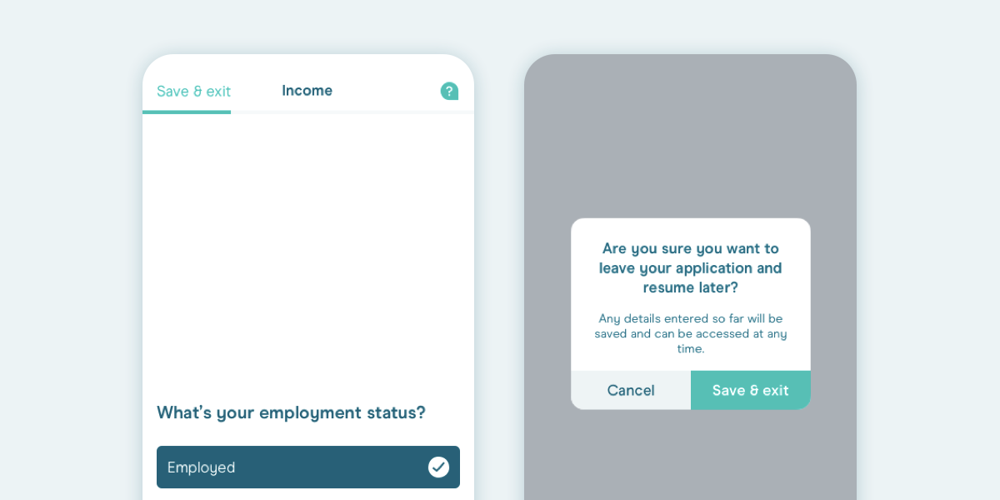
At the end of the MIP journey, customers wait a few short seconds for their Mortgage In Principle details to be calculated and are entertained with a fun lottie animation, before being presented with their estimate certificate.
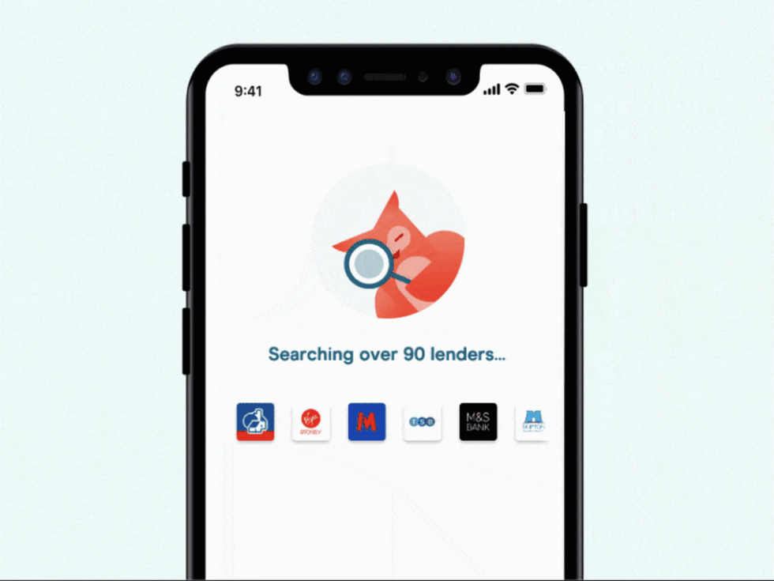
The customer’s MIP application (or offer) can be accessed at any time in-app in the Accounts > Mortgages tab. After receiving and reviewing their MIP, they will have the option to choose between a phone call or an in-app chat with a Moneybox mortgage adviser. We believe that giving customers more than one option to choose from will help better accommodate their needs.
We then track the customer’s journey through their mortgage application with updated copy at each milestone stage, keeping customers informed of their progress.
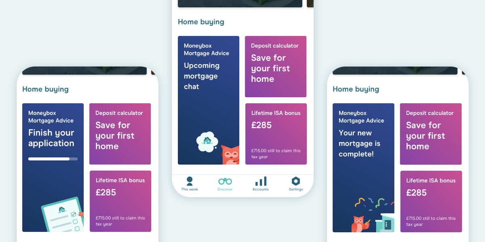
Testing our assumptions
Ahead of any new service or app release, it’s important we test new in-app journeys with our beta customers to understand feedback and make any improvements necessary.
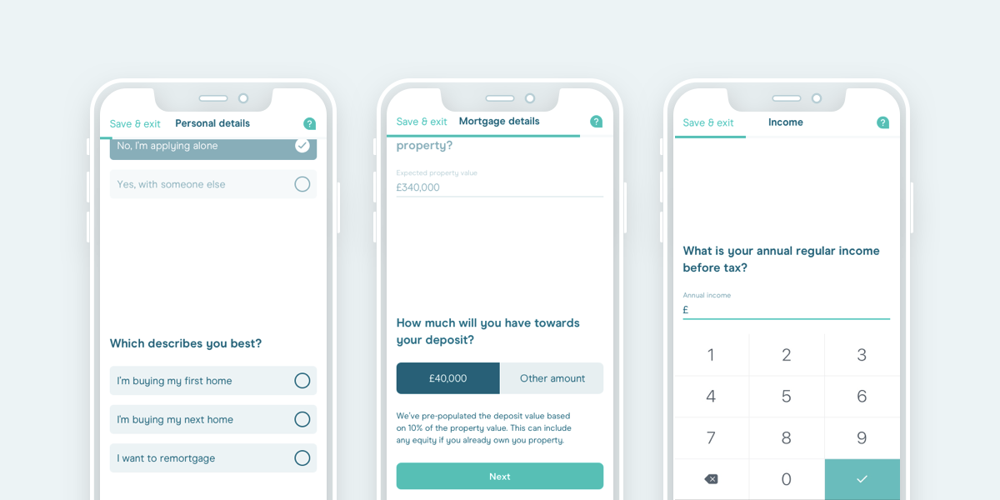
The objective for this beta testing was:
- Get a feel of how intuitive the questions were
- How lengthy the application perceived to be
- Understand if the progress bar was noticeable and helpful
- Confirming that having one question per screen made the flow easier to digest
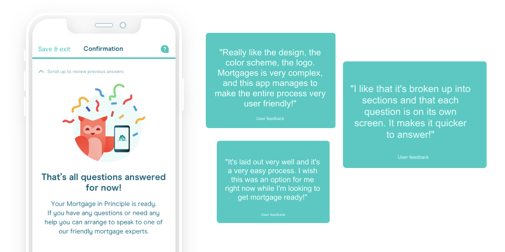
What we learned
✅ The level of questions felt appropriate: All participants were comfortable answering all the questions presented in the MIP.
✅ It was quick and easy to apply: All participants felt the application was very easy to complete and were positively surprised about how quick and easy the process was.
😕 Visual progress was good enough: All participants noticed the progress bar at the top and felt it didn’t positively or negatively impact their application.
✅ The level of questions felt appropriate: All participants were comfortable answering all the questions presented in the MIP.
❌ People were not familiar with MIP terminology: All participants were not familiar with the “Mortgage in Principle” terminology and would prefer to get more information upfront.
✅ The order of questions made sense: All participants found the order of the sections logical
💬 People prefer chatting: All participants expressed their preference in chatting vs. arranging a callback, mostly because they felt they could get an immediate reply.
✅ People are comfortable applying in-app: All participants were comfortable with starting a mortgage application from their mobile phone, especially if the application was well designed and only takes a few minutes to get started.
🤩 The UI felt friendly: All participants praised the intuitive and clean interface and were delighted by the graphics.
🤔 The save and exit option wasn’t clear: Participants didn’t understand that closing the application would save it. They were also expecting a back button on the top left corner and not an “X”.
✏️ People requested an easy way to make changes to their application: All participants would expect to be able to edit each individual section rather than having to go through the whole application again.
ℹ️ People would prefer helpful context in-place: Even though participants said the questions were clear, there was a suggestion to explain further some of the questions, such as government schemes.
Turning feedback into actions
We shared the results with the wider team and incorporated the feedback to improve the prototype even further:
- We created different introduction screens with a better visual and an explanation of the process, including MIP terminology.
- We added extra content on the screens related to government schemes in order to offer education to people who are not familiar with the terminology, as well as a refresher for people who already know about them.
- Even though we were already offering the ability to quit the journey and resume it. later on, based on the feedback we enhanced our approach and replaced the icon with the text “Save & Exit”.
- The beta testing sessions highlighted the importance of having the ability to review and edit all the answered questions, so we introduced a completely new screen to account for this.
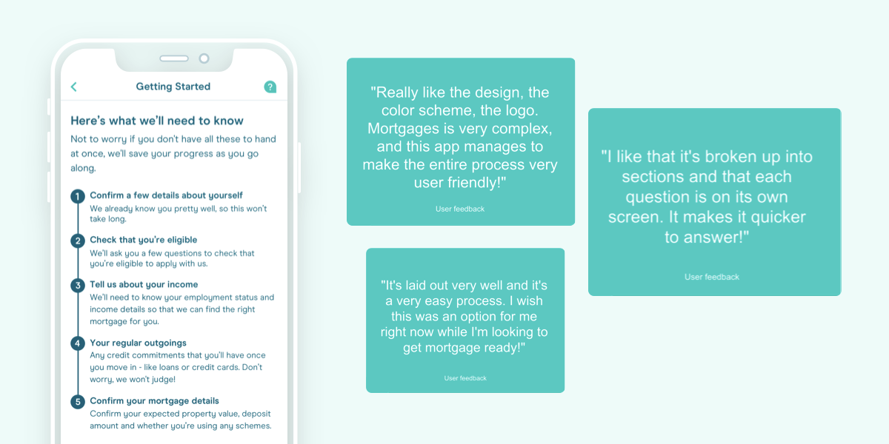
Conclusion
We rolled out Moneybox Mortgage Advice In February 2022 to all Moneybox customers and it’s been great to see so many people begin their mortgage journey with us.
“Great design is the iteration of good design, and this is only possible through great collaboration from team members and feedback from our customers.”
While there is always room for iteration and improvement, we’re proud to have created a full in-app mortgage application experience that is functional, easy to use and that will help many people achieve their home ownership goals.

Watch the video
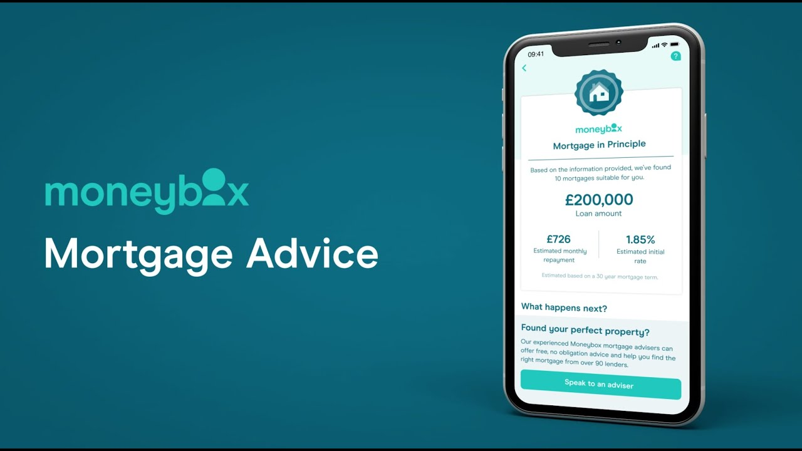
Watch the video on YouTube